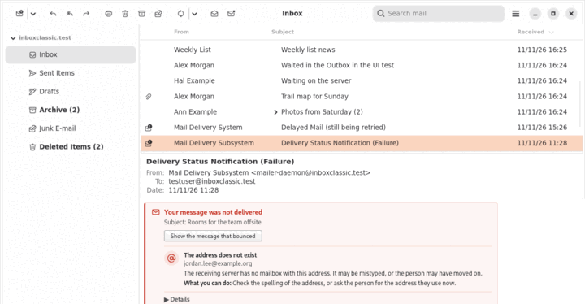

Mensajes que no se entregaron
Cuando un mensaje que envió se devuelve o se retrasa, Inbox Classic explica por qué y qué puede hacer.
Un aviso de entrega lleva una marca de no entregado en la lista de mensajes. Al abrirlo, una tarjeta encima indica si su mensaje no se entregó o solo se ha retrasado.

La tarjeta muestra cada destinatario con el motivo en palabras sencillas y lo que puede hacer. Detalles muestra las palabras exactas del servidor receptor.
- Mostrar el mensaje que no se entregó selecciona el mensaje que envió.
- En caso de retraso, Mostrar el mensaje retrasado lo selecciona. Su servidor de correo sigue intentándolo, así que no hace falta que lo envíe de nuevo.
Algunos motivos habituales:
| La tarjeta dice | Qué hacer |
|---|---|
| La dirección no existe | Compruebe cómo está escrita la dirección, o pida a la persona la que usa ahora. |
| El buzón está lleno | Envíelo de nuevo dentro de unos días, o póngase en contacto con la persona por otra vía. |
| Rechazado como correo no deseado | Envíelo de nuevo sin lo que parezca correo no deseado, como muchos enlaces o un archivo adjunto grande. |
| Su servidor de correo está en una lista de bloqueo | Reenvíe el aviso a su proveedor de correo. El problema no es el mensaje. |
| Entrega aplazada temporalmente | Nada. Normalmente se entrega en menos de una hora. |
Para encontrar todos los avisos de entrega, busque is:bounce. El motivo se determina en su equipo, y no se envía nada a ningún sitio.